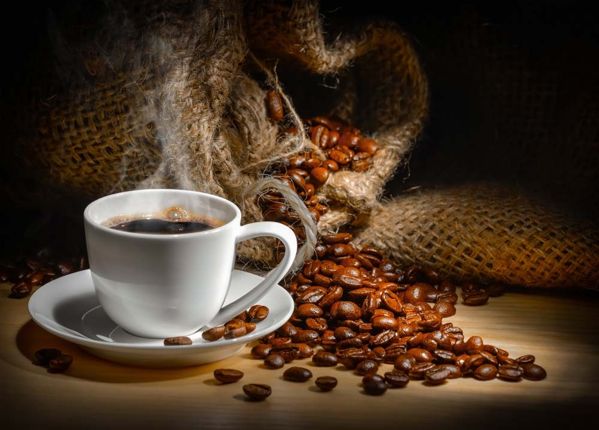

Виды кофе и кофейных напитков
Названия и описания
Нет, никаких «библий», «энциклопедий» и «всё о кофе». Просто актуальный кофе в чашке, шорт-лист. Освежаем в памяти основные виды и типы, держим в уме свежеобжаренные зёрна и их помол непосредствеенно перед приготовлением.

- Кофе по-турецки
Три с лишним сотни лет это был основной и практически единственный вид кофейного напитка, никогда не ставим его ни на какое место, кроме первого. Подробнее о нём и его национальных разновидностях здесь. Можно более внимательно отнестись к специям, сейчас как раз самое время проверить их профилактические свойства.
- Напитки на основе Эспрессо
- Эспрессо – основной напиток, краеугольный камень сегодняшней кофейной культуры.
- Создание идеального Эспрессо – это ключ к созданию идеального кофейного напитка.
- Ристретто – это проявление особого уважения к человеку и признание его способности оценить кофе. Это не экономия воды, как кое-кто может подумать.
- Лунго – с итальянской точки зрения сомнительный выбор, т.к. есть Доппио.
- Доппио – правильный выбор, вы – человек с характером.
- Американо – эээ…, кгм…, ну, если много лет пользоваться исключительно капельной кофеваркой, то, пожалуй да.
- Напитки на основе Эспрессо с молоком, молочной пеной и сливками
- Капучино подают присыпанным шоколадом или какао-порошком, его толстый слой пены – идеальный холст для художника, использующего сиропы, соусы, порошки, орехи и т.п. Прекрасное начало дня.
- Кофе Латте, или просто Латте, означает «кофе с молоком» или «кофейное молоко». Напиток с явным преобладанием молока над кофе.
- Макиато и Латте Макиато – подробно здесь. Буквально означает «пятнистый». Макиато самый простой кофейный напиток с молочной пеной, а Латте Макиато интересен достаточно редким расположением кофе между молоком и молочной пеной.
- Эспрессо кон панна, Эспрессо со сливками. Эспрессо или Доппио полностью или частично накрываются взбитыми сливками с добавлением сахара, экстракта ванили. Подаётся в демитассе («полчашки»).
- Флет-Уайт, «плоский-белый», нагретое молоко создаёт бархатистую ровную поверхность из молочной пены. По ингредиентам сопоставим с Латте, но меньше по объему и с меньшим количеством пены, поэтому имеет более высокую долю кофе в напитке. В бэкграунде этот тип имеет репутацию неудавшегося Капучино.
- Горячие кофейные напитки с алкоголем
- Irish Coffee
- Coffee Toledo
- Caribbean Coffee
- Coffee Амоrе
- Coffee Irish Nut
Основные моменты приготовления во всех случаях одинаково